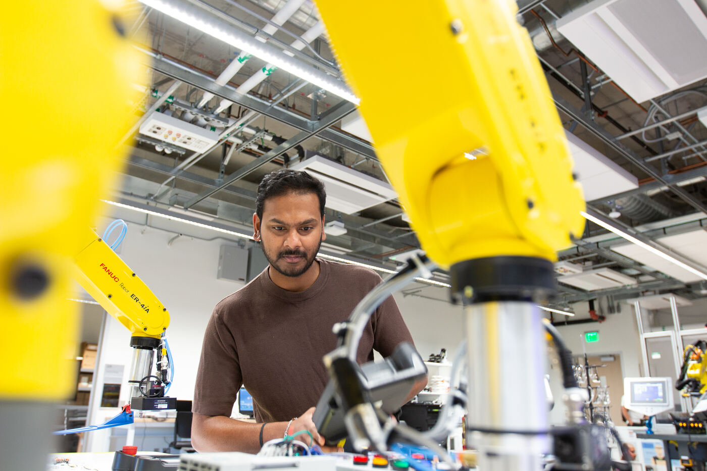

← Back to facilities
Facilities & equipment
FANUC robot arms
What they are
Industrial robot arms of the kind widely used on production lines, including the FANUC ER-4iA. These are the class of machines students will meet in manufacturing industry.

Industrial robot cells in the lab.
How the lab uses them
The FANUC platform appears in the industrial automation lab series: the collaborative robot and PLC integration lab (Industrial Automation Lab 5, in preparation) integrates a FANUC or Universal Robots platform with a PLC, exchanges commands and status between them, and validates an interlocked workcell sequence.